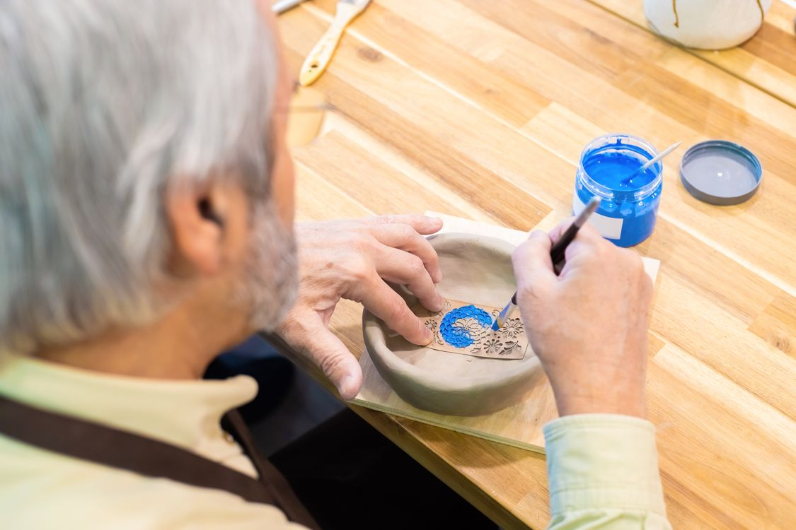

A oficina · The studio
One painter, one kiln, ten to fourteen panels a year.
The studio is deliberately small. Everything on this page — the training, the sample policy, the restoration rules — exists so that a panel ordered here is the panel that was approved, fired by the person who drew it.
Inês Duarte learned tile painting the slow way: as a restorer's assistant. From 2011 she worked in a Lisbon conservation workshop, cleaning, consolidating and — under supervision — repainting losses on eighteenth- and nineteenth-century panels. Restoration teaches a painter two things no art school does: how a repeat is actually constructed, tile by tile, and how cobalt behaves when it is fired against tin glaze that is older than the painter.
In 2015 she trained in majolica technique — painting raw glaze on biscuit-fired earthenware — and began taking private commissions alongside the restoration work. The oficina in Alcântara opened in 2019, in a former rope-maker's workshop with the north light the trade has always wanted. Since then the studio has made panels for kitchens, gardens, cafés and one very patient fountain in Évora.
The catalogue motifs on the home page — Estrela, Flor, Onda, Losango — are her own drawings, built the way historical repeats are built: one tile designed so that its edges continue into its neighbours. Bespoke panels start from whatever the wall is for — swallows over a Lisbon kitchen, oranges over a Sintra garden — drawn at full size on paper before a single tile is touched.
She still takes restoration work, because it is where the craft came from, and because a city that stops repairing its tile walls will not have them for long.

- Painting since2011 — restoration first, commissions from 2015
- StudioAlcântara, Lisbon — opened 2019; visits by appointment
- Kiln120-litre electric, glaze firings at 980 °C
- Output10–14 panels a year; singles and restorations between
- BodiesTin-glazed earthenware indoors; frost-proof stoneware outside
Trabalhar comigo · Working with the studio
The rules, before you ask.
Most commission problems are expectation problems. These are the studio's standing answers — on motifs, samples, restoration ethics, installation, care and shipping — so nothing below should ever surprise a client mid-panel.
Bespoke vs catalogue
Catalogue motifs (Estrela, Flor, Onda, Losango) are drawn, tested and fired many times — you are buying certainty, at €24 a tile. A bespoke drawing is made for your wall alone, at €38 a tile; it is never sold to anyone else, and the full-size paper drawing is yours to keep. A catalogue motif can be adapted — a drawn border, a changed colourway — for a one-off drawing fee of €120.
The sample policy
No panel is produced without a fired sample tile you have approved. The sample costs €55 and is credited in full against the order. It exists because cobalt fires differently from how it paints — grey-blue going in, bright coming out — and because screens lie about colour. If two samples in a row miss what you asked for, you may walk away; the sample fee is the whole cost of finding out.
Restoration ethics
New tiles are made to sit quietly with old ones, never to impersonate them. Every replacement is dated on its back and listed in a record the owner keeps. The studio does not artificially age, distress or crackle new work to pass it off as period, and will decline a commission that asks for that. Matching is a matter of palette and drawing; honesty is a matter of the record.
Installation
Panels are installed by your own tiler, working from the numbered setting-out map that travels with the tiles. Flexible tile adhesive, 3 mm joints, and a grout colour chosen at the drawing stage — grout is half the finished look, and it is decided before firing, not on the day. Exterior panels need a sound, drained substrate; the studio will say so plainly if a wall is not ready.
Care
Tin glaze is glass: it wants water and a soft cloth, nothing more. No acids, no abrasive pads, no pressure washers on exterior work. Kitchen panels behind a cooker take ordinary cooking grease off with warm water and a drop of washing-up liquid. Spare tiles from your panel's own firing — 2% are included — live in a labelled box; keep them, because a repair in twenty years wants a tile from the same kiln load.
Shipping fragile work
Tiles travel face-to-face in pairs, foam-lined, in double-walled crates built for the panel, each tile's number matching the setting-out map. Breakage in transit is replaced from the panel's spare batch at no charge — it has happened twice in seven years, both times on the same courier route, which the studio no longer uses. Collection from Alcântara is free and, for Lisbon panels, preferred.
Questions the page hasn't answered?
Ask them before the drawing, not after the firing. The enquiry form asks for the wall's measurements because everything else follows from those.
Enquire about a panel or write directly: oficina@inesduarte.example